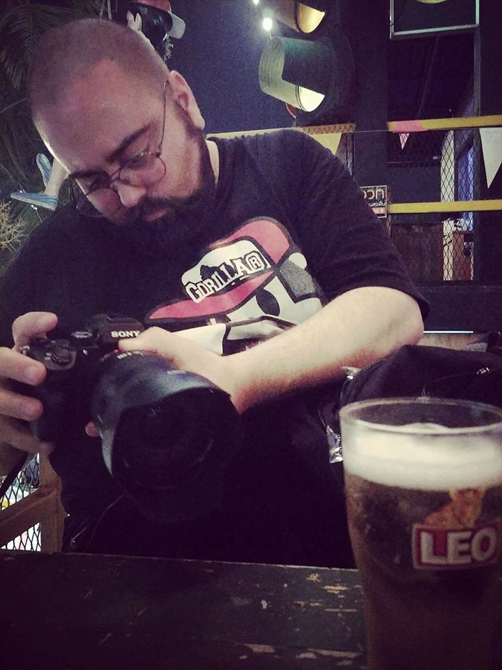

Since the first photo was captured in the early 1820s, people have realized the importance
of them. We are fascinated with creating memories
. We want to freeze special moments to be able to
transport ourselves back in time to that exact moment

As a fine art photographer,
I specialize in creating a story that tells the love between people
in a tangible way – full of life and beauty
. I chose to create this art by using film photography, which gives me the ability to create a timeless look that is refined and elegant. This allows for my clients to be able to enjoy their photos for many decades to come.